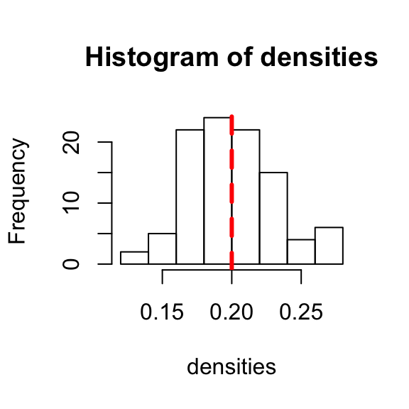

- Simulating Random Graphs and Simulations
Dai Shizuka
7/10/2018
5.1 What is a random graph?
Thus far, we have spent most of our time playing around with empirical networks. However, it is often very instructive to understand the behavior of networks that are generated using simple mechanisms. The simplest type of random graph is what is called the Erdös-Renyí Random Graph. This is what people typically mean when they say “Random Graph” (though, you will see later, that there are many different ways to be random).
These come in two flavors:
- G(n,m) model, in which n nodes are randomly connected by m edges.
- G(n,p) model, in which we have a graph of n nodes, and each pair of nodes has probability p of being connected.
The main property of an Erdös-Renyí Random Graph is that, given n nodes and m edges (or probability p of an edge between each pair of nodes), everything else is unconditioned–i.e., random.
Both of these types of random graphs can be created using a function called erdos.renyi.game(). Let’s first make a G(n,m) random graph with n = 20 and m = 38, calculate the density and plot it.
library(igraph)
g1=erdos.renyi.game(20,38,type="gnm")
g1## IGRAPH 3611d57 U--- 20 38 -- Erdos renyi (gnm) graph
## + attr: name (g/c), type (g/c), loops (g/l), m (g/n)
## + edges from 3611d57:
## [1] 1-- 3 2-- 4 4-- 6 5-- 6 1-- 7 5-- 8 6-- 8 3-- 9 6-- 9 1--10
## [11] 8--10 1--11 10--11 5--12 6--12 7--12 4--13 9--13 10--14 12--14
## [21] 4--15 5--15 1--16 7--16 11--16 6--17 11--17 12--17 6--18 7--19
## [31] 13--19 14--19 15--19 18--19 2--20 3--20 11--20 17--20graph.density(g1) ## [1] 0.2plot(g1,layout=layout.circle)
This random graph will “look” different each time you run this set of codes—different sets of nodes will be connected (Unless you’ve used the set.seed() function). However, the density will always remain the same (#edges/[#dyads] = 38/[20*19/2] = 0.2).
Let’s contrast this now with a G(n,p) random graph with n = 20 and p = 0.2. We’ll print the number of edges and the graph density, and plot the graph.
g2=erdos.renyi.game(20,0.2,type="gnp")
ecount(g2)## [1] 32graph.density(g2) ## [1] 0.1684211plot(g2,layout=layout.circle)Your output will look approximately like mine, but it’ll be a bit different. This is because now the number of edges is a probabilistic outcome of having p = 0.2 chance of each dyad being connected. This means that if you run this set of codes repeatedly (try it), you will get densities that hover around 0.2.
5.2 Making ensembles of random graphs
Let’s now try to better understand the behavior of random graphs by creating an ensemble of 100 random graphs with some known property and calculating the mean density of these graphs. We can do this by using “for-loops”
What we want to do is use the for-loop to calculate densities for 100 random graphs of n = 20 and p = 0.2, and take the mean of these values.
densities=vector(length=100) #set up empty vector
for (i in 1:100){
r=erdos.renyi.game(20,0.2,type="gnp") #random graph
densities[i]=graph.density(r) #store the density of random graph as the ith element of the vector
}
densities #print the resulting vector (I won't show this below) mean(densities) #calculate the mean density## [1] 0.1736842 0.2578947 0.2315789 0.2052632 0.2000000 0.1578947 0.2052632
## [8] 0.1894737 0.2210526 0.2157895 0.1684211 0.1789474 0.1736842 0.1631579
## [15] 0.1368421 0.2157895 0.1947368 0.1894737 0.1736842 0.1421053 0.2263158
## [22] 0.2157895 0.1473684 0.2263158 0.2210526 0.2789474 0.2631579 0.1736842
## [29] 0.1578947 0.1789474 0.1684211 0.2157895 0.2052632 0.2421053 0.1789474
## [36] 0.2105263 0.1315789 0.2105263 0.2210526 0.1736842 0.2684211 0.2000000
## [43] 0.1894737 0.2684211 0.2578947 0.2210526 0.2105263 0.1947368 0.1789474
## [50] 0.1894737 0.2000000 0.2263158 0.2052632 0.1736842 0.2157895 0.2157895
## [57] 0.2631579 0.2789474 0.2052632 0.2052632 0.1947368 0.2157895 0.1842105
## [64] 0.2052632 0.2263158 0.2315789 0.1631579 0.2000000 0.1947368 0.1789474
## [71] 0.2315789 0.2105263 0.2315789 0.1578947 0.1789474 0.2105263 0.2315789
## [78] 0.2000000 0.1894737 0.2578947 0.2000000 0.2157895 0.2052632 0.1631579
## [85] 0.1631579 0.2000000 0.1947368 0.1947368 0.1631579 0.1842105 0.2263158
## [92] 0.1947368 0.1894737 0.1789474 0.2052632 0.1894737 0.1894737 0.1631579
## [99] 0.2210526 0.1789474The result should always be very close to 0.2. You can visualize this data by making a histogram of the densities of your random graphs, and then compare it to the theoretical average by drawing a line at density = 0.2. The peak of the histogram should be near the line.
hist(densities)
abline(v=0.2,lwd=3,lty=2,col="red") #draw a vertical line at x = 0.2. Make this line width = 3, line type = 2 (dashed line), and the line color = red
While we’re at it, let’s visualize a set of random graphs. Here, we are going to first set up the plotting region using the par() function. We will divide up the plotting region into a 3x3 grid to accommodate 9 figures.
# Make a plot of 9 random graphs
par(mfrow=c(3,3),mar=c(1,1,1,1)) #the mfrow= argument sets up the number of rows and columns within the plotting region. mar= argument sets the margins of the figures:c(bottom,left,top,right).
for (i in 1:9){
r=erdos.renyi.game(20,p=0.2)
plot(r,layout=layout.circle,edge.color="black",edge.width=2,vertex.color="red",vertex.label="") #a bunch of arguments to make the figure look pretty.
}5.3 Properties of Random Graphs
So, why are we fooling around with random graphs anyway? Well, the main reason is that it serves as a good null hypothesis of what the structure of a basic system of n components and m connections or p probability of connections look like, all else equal. The great thing about Erdös-Renyí Random Graphs is that the process to generate them is extremely simple, and the properties of the resulting system is highly predictable and simple.
An example: we can’t know exactly what the mean degree or density of any given random graph is, but we can know what the average value of those things are given we make enough random graphs with the same property.
Here are some basic properties of random graphs of size n and probability of links p:
- total number of edges = \(p \frac{n(n-1)}{2}\)
- mean degree = \((n-1)p\)
- clustering coefficient = \(p\)
5.4 Simple exercise: path length and network size
We can use the same scheme for creating ensembles of random graphs to explore how properties of these networks change with size. As an example, let’s explore how average path length of a network changes as we add more nodes.
As an example, let’s explore the relationship between the size of the network and its average path length. Recall that here, a “path” means the shortest path (aka geodesic path) between any pair of nodes. As the network grows in size, we would expect that the average path length will increase… but how fast? Is it proportional to the number of nodes? Let’s explore this question using simulations of random graphs.
First, let’s think about what we want to do… We want to build random graphs of varying size: let’s say we’ll make n = 10, 20, 30, … to 100. To get a vector of this sequence of numbers, we’ll use a function called seq():
seq(from=10,to=100,by=10) #create a vector of numbers starting from 10, ending in 100, in intervals of 10.## [1] 10 20 30 40 50 60 70 80 90 100For each network size, we’d like to make a bunch of random graphs, let’s say 500. This means we are going to calculate average path lengths for 10 x 500 graphs.
Another thing to keep in mind is that, since we are interested in the effect of network size per se, we want to keep other components of the network constant as we manipulate network size. For instance, we want to keep the average degree of nodes constant. For example, let’s say each person knows 5 people. Then what do we need p to be?
If mean degree = (n-1)p = 5, then p = 5/(n-1)
So when we create our random graphs, we want to use this probability for p.
Now, we’re going to embed a For-loop within a For-loop (not the most elegant way to do this, but it works fine). This is when things can potentially get out of hand—you are essentially going to be running 5,000 lines of code at once (actually 5,000 x 2 = 10,000 lines). Thankfully, R can handle this… for reference, it takes about 0.0015 seconds to generate a random graph of n = 100 and calculate its average path length.
Remember, before we get started, we first need to create an empty matrix with 10 columns and 500 rows to ‘store’ all the ‘average path length’ values that we are going to produce (you can choose to do 10 rows of 500 columns. It doesn’t matter as long as you keep track).
So here we go: We are going to create random graphs of size n=10, 20, 30,… 100, and we are going to do it i=500 times per each size n. The result of each iteration will be stored in the ith row, (n/10)th column (1st column for n = 10, 2nd column for n = 20, so on) of the matrix called paths.
paths=matrix(ncol=10,nrow=500)
for (n in seq(10,100,10)){
for(i in 1:500){
r=erdos.renyi.game(n,p=(5/(n-1)))
paths[i,n/10]=average.path.length(r)
}
}
head(paths)## [,1] [,2] [,3] [,4] [,5] [,6] [,7]
## [1,] 1.511111 1.831579 2.005291 2.591026 2.656327 2.743503 2.859213
## [2,] 1.577778 1.942105 2.119540 2.414103 2.315102 2.728814 2.910448
## [3,] 1.466667 1.884211 2.390805 2.565385 2.681633 2.630508 2.872123
## [4,] 1.488889 1.884211 2.222989 2.300000 2.706122 2.515254 2.831628
## [5,] 1.444444 1.947368 2.078161 2.337179 2.569796 2.776836 2.991901
## [6,] 1.644444 2.194737 2.328736 2.385897 2.565714 2.611923 2.976556
## [,8] [,9] [,10]
## [1,] 2.752996 2.813480 3.037172
## [2,] 2.902532 2.801328 2.970707
## [3,] 2.852321 3.012002 3.122424
## [4,] 2.855696 3.033208 2.944246
## [5,] 2.885427 2.947906 3.043434
## [6,] 2.841456 2.979624 3.082222The next step is to plot the average value of the average path lengths for each network size n. That is, we want to take the mean value of each column of this matrix. The quickest way to do this is to use the apply() function. The apply() function is a really powerful way to apply the same function to multiple components of an array or matrix. The syntax is: apply('the matrix or array', 'margin'—1 for rows and 2 for columns, 'function'). In this case, we want to apply the function mean() to the columns of the matrix called paths.
paths.avg=apply(paths,2,mean)
paths.avg## [1] 1.471033 1.941004 2.224986 2.417467 2.552701 2.680910 2.787075
## [8] 2.867998 2.934962 3.012320Now let’s plot these results.
x=seq(10,100,10) #the x-axis is going to be 10, 20, 30,...100
plot(x,paths.avg,type="b",pch=20,xlab="N",ylab="Average Path Length", las=1)
As you can see, the average path length does not increase as fast as network size: it has only doubled, while network size has increased 10-fold. Now, let’s plot make the x-axis a log-scale. To do this, we just add another argument: log=“x”).
plot(x,paths.avg,type="b",pch=20,xlab="N",ylab="Average Path Length",log="x",las=1)
So, average path length increases in proportion to the log of network size in a random graph. This makes a lot of sense: the number of nodes that are s steps away scales exponentially with the average degree–if everyone knows 5 people, you can potentially reach up to 5^2 = 25 people in two steps, 5^3 = 125 people in three steps, etc. This means that average path length increases more slowly than network size.